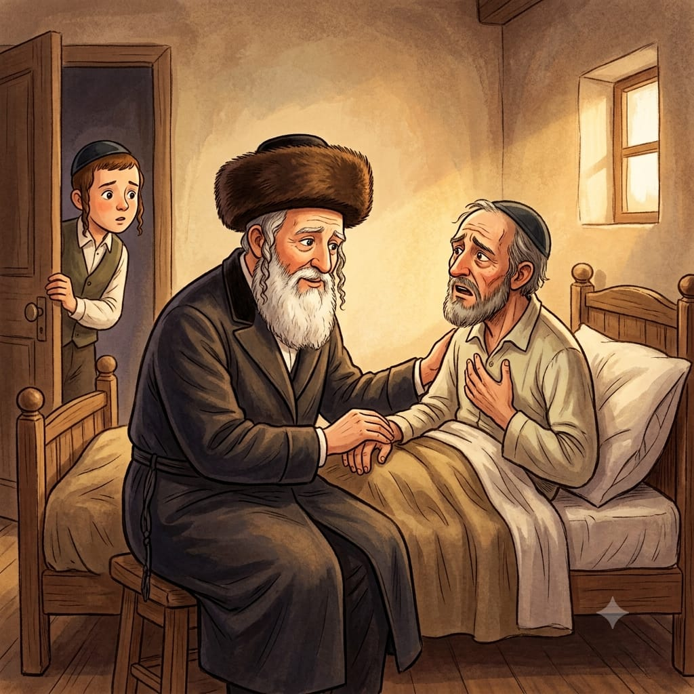

It Really Happened
A Share in Heaven
About this episode: A true story about Rabbi Levi Yitzchak of Berditchev, the defender of the Jewish people, and a dying man tormented by his past - and the extraordinary gift the Rabbi offered him in his final moments.
0:00
--:--
We couldn't load the recording. Check your internet connection and try again.